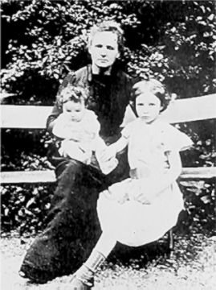

Chương 20
Cứ mỗi buổi sáng, ở phố Qui-vi-ê, có một phụ nữ trông còn trẻ bước vào phòng nghiên cứu lấy ở mắc chiếc áo choàng vải thô mặc ra ngoài áo dài đen của mình và bắt đầu làm việc. Đó là một nhà vật lý nước da xanh lướt, người rất mảnh dẻ, mặt hơi sạm, mái tóc hung ngả màu tro.
Chính cái thời kỳ buồn tẻ này của đời mình, vẻ đẹp của bà mới đạt đến mức tuyệt mỹ. Người ta thường nói rằng, càng thêm tuổi đời, con người càng đạt tới khuôn mặt đúng nhất của mình. Đối với Ma-ri Qui-ri quả không sai chút nào. Nếu cô bé Ma-ri chỉ mới là “xinh xắn”, nếu cô nữ sinh và người vợ trẻ rất duyên dáng đậm đà, thì nhà nữ bác học chín chắn, trầm lặng sầu cảm, có một vẻ đẹp lạ kỳ. Đời sống tinh thần làm khuôn mặt Xla-vơ trông càng rạng rỡ. Ma-ri không cần tô điểm bề ngoài như vẻ tươi tắn, trẻ trung. Những trang sức cao quý của con người đã ngoài bốn mươi tuổi đó là vẻ cương nghị, man mác buồn và thân hình ngày càng mảnh dẻ. Ma-ri Qui-ri sẽ giữ trong nhiều năm trước mắt Irène và Ève hình dáng lý tưởng đó.
 .
.
Là giáo sư, là nhà nghiên cứu và phụ trách một phòng thí nghiệm, Ma-ri vẫn làm việc với một cường độ phi thường. Bà vẫn dạy học ở Xe-vrơ. Ở Xoóc-bon bà được bổ nhiệm “giáo sư thực thụ” từ 1908 – dạy lớp đầu tiên, lúc này là lớp duy nhất về phóng xạ trên thế giới – phải cố gắng như thế nào. Bà muốn vượt lên bằng những bậc thầy mà xưa kia hồi còn là sinh viên Ma-ri hết sức khâm phục.
Năm 1910 Ma-ri cho xuất bản một pho sách về sự phóng xạ gồm các bài giảng của mình. Chín trăm bảy mươi mốt trang sách chỉ đủ để tóm tắt những hiểu biết đã đạt trong lĩnh vực này kể từ khi mới ngày nào Pi-e và Ma-ri Qui-ri báo tin đã khám phá ra chất Ra-đi.
Ảnh của tác giả không để ở đầu sách. Đối diện với đầu đề Ma-ri để ảnh của chồng. Hai năm trước đây, năm 1908, cũng cái ảnh đó đã in trong một quyển sáu trăm trang “Những công trình nghiên cứu của Pi-e Qui-ri” do Ma-ri biên soạn và giới thiệu.

.Madame Marie Curie với 2 con gái Irene và Eve.
Học trò của bà Qui-ri tăng lên rất đông. Họ nhập vào đội ngũ những phụ tá của trường Đại học cùng với một vài người tự nguyện đến giúp việc không lương. Mô-rít Qui-ri, con của Giắc Qui-ri cũng bắt đầu sự nghiệp khoa học của anh ở đây. Ma-ri tự hào về năng khiếu và thành tích của đứa cháu mà bà yêu quý như con đẻ.
Lúc này Ma-ri đang tiến hành tốt đẹp một chương trình nghiên cứu mới, tuy sức khỏe cứ sút kém dần.
Tinh khiết nhiều đề-xi-gam Ra-đi clo-rua và xác định một lần thứ hai trọng lượng nguyên tử của Ra-đi. Rồi tìm cách tách riêng kim loại này. Trước đây mỗi lần chế biến ra Ra-đi gọi là “nguyên chất” thì đó mới là những muối Ra-đi (clo-rua hoặc brô-mua), dạng ổn định duy nhất của nó. Nay Ma-ri Qui-ri và Ăng-đrê Đờ-biếc-nơ có thể cô lập ngay thứ kim loại này, không để những yếu tố khí quyển làm nó biến chất. Đó là một công việc tinh vi bậc nhất trong khoa học.
Ăng-đrê Đờ-biếc-nơ, một cộng sự lâu năm và cũng là một nhà bác học ưu tú giúp bà Qui-ri nghiên cứu sự phát quang của Pô-lô-ni. Ma-ri lại còn tìm ra một phương pháp định lượng Ra-đi bằng cách đo khí tỏa của nó.
Khoa chữa bệnh theo phương pháp Qui-ri phát triển, nhiều nơi trên thế giới đòi hỏi có thể phân chia chất quý báu này ra những lượng rất nhỏ và đo lường thật chính xác. Đến một phần nghìn mi-li-gam, cái cân không còn tác dụng nữa. Ma-ri nghĩ ra cách “cân” những chất phóng xạ bằng những tia do chúng tỏa ra. Bà đã hoàn chỉnh kỹ thuật khó khăn này và thành lập ngay trong phòng thí nghiệm “một bộ phận đo lường” để các nhà bác học, thầy thuốc, và cả người thường, có thể đến kiểm tra các chất có hoạt tính và xác định tỷ lệ Ra-đi của chúng.
Cùng với “Bảng phân loại các chất phóng xạ” và “Bảng hằng số phóng xạ”, mẫu chuẩn quốc tế đầu tiên về Ra-đi được quy định. Cái ống nghiệm nhỏ bằng thủy tinh, mà Ma-ri cảm động tự tay hàn kín, chứa đựng 21 mi-li-gam Ra-đi clo-rua nguyên chất sẽ dùng để làm mẫu cho các ống chuẩn sau này rải rác khắp năm châu và được trịnh trọng đặt trong gương trong phòng Đo lường ở Xe-vrơ gần Pa-ri.
*
Sau vinh quang của chung Pi-e và Ma-ri Qui-ri, bây giờ đến lượt danh tiếng riêng của bà Qui-ri nổi lên và lan rộng.
Bằng tiến sĩ danh dự, bằng thông tín viên các viện Hàn lâm ở các nước, để chật các ngăn kéo trong nhà. Ma-ri cũng chẳng nghĩ đến trưng bày lên, hoặc lập danh sách nữa.
Nước Pháp chỉ có hai cách suy tôn các bậc vĩ nhân của mình hồi còn sinh thời, là tặng Bắc đẩu bội tinh và đưa vào Viện Hàn lâm. Năm 1910, tặng Bắc đẩu bội tinh cho bà Qui-ri, nhớ lại thái độ của Pi-e trước kia, Ma-ri không nhận.
Tiếc rằng sau đó vài tháng, khi các đồng nghiệp quá nhiệt tình, cứ khuyên bà ứng cử vào Viện Hàn lâm khoa học, bà chẳng biết từ chối như thế nào. Ma-ri quên rồi hay sao lần bỏ phiếu tủi nhục mà Pi-e trước đây đã phải chịu? Hay là không biết cái màng lưới ghen tị đang chăng quanh mình?
Đúng thế Ma-ri không biết. Hơn nữa, vốn chất phác, người phụ nữ Ba Lan đó sợ tỏ ra hiếu kỳ, bạc bẽo, nếu từ chối vinh dự khoa học cao quý mà theo như bà nghĩ, quê hương thứ hai tặng cho mình.
Ra tranh cử với Ma-ri Qui-ri là Ê-đu-a Brăng-li[46], một nhà vật lý học lỗi lạc và một người theo đạo Thiên chúa có tên tuổi. Giữa hai phe Qui-ri và Brăng-li, phe tự do tư tưởng và phe đạo giáo, giữa những người theo và chồng cái ý nghĩ mới mẻ, kỳ quặc là nhận phụ nữ vào Viện Hàn lâm, cuộc chiến đấu nổ ra trên khắp các mặt.
Kinh hoảng, bất lực, Ma-ri chứng kiến những cuộc bút chiến mà mình không lường trước. Những nhà bác học nổi tiếng nhất như Hăng-ri Poang-ca-rô, bác sĩ Ru, E-min Pi-ca, các giáo sư Líp-man, Bu-ri và Đác-bu đứng ra vận động cho bà nhưng phe bên kia chống trả rất mạnh.
“Đàn bà không được vào Viện Hàn lâm”. A-ma-ga, cách đây tám năm đã may mắn thắng phiếu Pi-e Qui-ri, nay lại lên giọng đạo mạo. Có những kẻ rỗi hơi khăng khăng với phe đạo giáo rằng Ma-ri là người Do Thái, hoặc quả quyết với phe tự do tư tưởng là bà theo đạo Thiên chúa. Đến ngày bỏ phiếu 23 tháng giêng 1911 khai mạc buổi họp, chủ tịch gọi bảo các thừa phái:
– Cho tất cả mọi người vào, trừ đàn bà!
Một cụ Hàn lâm mắt kém, gần như không nhìn thấy gì, đứng về phe bà Qui-ri, than phiền suýt nữa bầu trái với ý mình vì người ta nhét vào tay cụ một phiếu giả.
Bốn giờ chiều, các phóng viên nhà báo tinh thần căng thẳng cực độ vội chạy đi thảo những tin tức “thắng” hay “bại”.
Ma-ri Qui-ri thiếu một phiếu nên thua cuộc.
Ở phố Qui-vi-ê, anh em phụ tá và anh lao công, còn sốt ruột ngóng kết quả bỏ phiếu hơn cả người ứng cử. Họ đinh ninh rằng Ma-ri sẽ thắng, nên từ sáng đã mua một bó hoa to để sẵn dưới gầm chiếc bàn cân đo. Được tin bà Qui-ri không trúng cử, họ thất vọng thờ thẫn. Anh thợ máy Lu-i Na-gô, hậm hực, cất biến ngay bó hoa đã thành vô dụng. Ai nấy im lặng, chuẩn bị những lời an ủi. Nhưng rồi họ nào có dịp nói ra, Ma-ri, từ trong phòng nhỏ vẫn làm việc, bước ra. Bà không nói một lời nào về cái thất bại không hề làm cho bà ngao ngán.
Trong lịch sử của gia đình Qui-ri, hình như nước ngoài luôn luôn sửa chữa những đối xử của nước Pháp. Tháng chạp năm 1911 ấy, Hàn lâm viện khoa học Xtốc-khôm (muốn biểu dương những công trình chói lọi do bà Qui-ri làm được từ khi chồng chết) lại tặng bà giải thưởng Nô-ben về hóa học. Đây là trường hợp duy nhất một người hai lần được giải Nô-ben như thế.
Cùng sang Thụy Điển với Ma-ri, có Brô-ni-a và cả I-ren. Cô bé được dự buổi trao giải thưởng long trọng. Hai mươi bốn năm sau, cũng trong phòng này sẽ đến lượt I-ren nhận giải Nô-ben về hóa học. (Đó là năm 1935, một năm sau khi Ma-ri Qui-ri mất – ND)
Ngoài những cuộc đón tiếp thường lệ và bữa tiệc ở Hoàng cung, nhân dân Thụy Điển còn tổ chức hội mừng nhà nữ bác học vừa được giải. Ma-ri sẽ giữ mãi kỷ niệm rất đẹp và thú vị về một tối vui ở thôn quê; hàng trăm cô gái quần áo sặc sỡ, đội trên đầu những vòng nến đang cháy, ánh nến lung linh theo điệu múa nhịp nhàng.
Nói chuyện trước công chúng Thụy Điển, Ma-ri tặng lại cho Pi-e sự ngưỡng mộ mà người ta dành cho bà:
“Tôi xin nhắc lại rằng sự khám phá ra Ra-đi và Pô-lô-ni đều có đóng góp của Pi-e. Trong lĩnh vực phóng xạ, Pi-e Qui-ri còn có những công trình nghiên cứu căn bản, hoặc làm riêng, hoặc cùng làm với tôi, hoặc làm chung với học trò của ông.
Việc tách riêng chất Ra-đi dưới dạng muối tinh khiết và khẳng định được chất ấy là một chất mới đặc biệt do tôi làm, nhưng cũng gắn liền với sự nghiệp chung. Vinh dự cao quý mà tôi được nhận hôm nay, bắt nguồn từ sự nghiệp chung đó và có thể coi như một sự tôn kính đối với hương hồn người đã khuất”.
*
Với một khám phá lừng danh khắp năm châu và hai giải Nô-ben, Ma-ri được rất nhiều người khâm phục nhưng cũng bị lắm kẻ ghen ghét.
Một chiến dịch lăng mạ điên đảo nổ ra giữa Pa-ri như muốn vùi dập người quả phụ 44 tuổi đã yếu đuối kiệt sức vì một công việc quá nặng nề.
Nghiên cứu khoa học thời đó còn là công việc của đàn ông. Đương nhiên những người bạn thân nhất của Ma-ri, những người mà bà có thể trao đổi suy nghĩ, thổ lộ tâm sự phần lớn là nam giới. Và trong quan hệ bạn bè và đồng nghiệp này, bà thường có một ảnh hưởng sâu sắc, nhất là đối với một nhà bác học lớn đương thời. Thế là đủ cho thiên hạ gièm pha, dị nghị. Một nữ bác học suốt đời chỉ biết làm việc, một tấm lòng đoan trang, nghiêm túc, và mấy năm lại đây, còn rất đáng thương lại bị vu khống là làm tan nát nhiều gia đình và bôi nhọ một thanh danh quá chói lọi.
Thời gian đã trả lời và phê phán những người đã khởi xướng ra cuộc công kích này. Nhưng hồi đó bao lần Ma-ri phải chống đỡ tuyệt vọng và vụng về bi thảm. Về những bài báo đương thời có tính chất lăng mạ, những bức thư nặc danh, đe dọa hành hung và có nguy cơ đến tính mạng.
Ma-ri bị xô đẩy đến chỗ suýt thì hóa điên, hóa dại, và thế lực như suy kiệt, cuối cùng, bà đã bị một bệnh hiểm nghèo đánh gục.
Chỉ cần nhắc lại ở đây, một việc ít tai hại nhất nhưng cũng đê tiện nhất, luôn luôn đả kích vào bà Qui-ri trên suốt con đường bà đi. Cứ mỗi khi có cơ hội hạ thấp con người duy nhất ấy – như trong những ngày đau khổ 1911 – hoặc khước từ không cho bà một chức vị, một phần thưởng hay một danh vọng, thí dụ vào Viện Hàn lâm, thì người ta lại lôi cái nguồn gốc của bà ra gièm pha hèn mạt. Hết vu khống là người Nga, người Đức lại bị chê trách là người Do Thái, người Ba Lan, và tóm lại là “một mụ nước ngoài” đến Pa-ri để chiếm đoạt, giành giật địa vị lạm quyền. Nhưng mỗi khi có tài năng của Ma-ri Qui-ri, khoa học được đưa lên đài danh vọng, mỗi khi các nước khác ca ngợi biểu dương, tặng bà những danh vị, suy tôn chưa hề thấy từ trước, thì bỗng nhiên mấy tờ báo ấy, ngòi bút ấy lại không ngớt lời tâng bốc “nữ sứ giả của nước Pháp, đại diện tiêu biểu nhất cho tinh hoa của chủng tộc ta và vinh quang của đất nước”. Và lúc đó người ta cố tình quên nguồn gốc Ba Lan mà bà rất tự hào cùng với một sự bất công như trước đó, nó bị đả kích.
Xưa nay vẫn thế, các vĩ nhân vẫn bị bao kẻ bới lông tìm vết, chúng hằn học chỉ muốn khám phá được dưới cốt cách của thiên tài những dấu hiệu không hoàn mỹ. Giá không có danh vọng, không bị cái nam châm đáng sợ đó thu hút về mình nhiều người yêu những cũng lắm kẻ ghét, thì có lẽ Ma-ri Qui-ri đã chẳng bao giờ bị đặt điều vu khống. Giờ đây, bà lại thêm một lý do nữa để thù ghét vinh quang.
*
Trong hoạn nạn ta mới thấy rõ bạn của mình. Hàng trăm lá thư của những người có danh tiếng hoặc không tên tuổi gửi đến Ma-ri Qui-ri tỏ lòng xúc động và công phẫn trước những thử thách mà bà phải chịu đựng. Bạn bè như Ăng-đrê Đờ-biếc-nơ, và những trợ lý, sinh viên của Ma-ri, đều lên tiếng bênh vực bà.
Nhiều giáo sư đại học, chỉ hơi quen biết Ma-ri cũng giúp đỡ động viên bà. Hai vợ chồng nhà toán học E-min Bô-ren rất ân cần, săn sóc, muốn khôi phục lại sức khỏe cho Ma-ri đã mời bà sang nước Ý để tĩnh dưỡng.
Cùng với anh ruột là Dô-dếp, hai chị là Brô-ni-a và Hê-la từ Ba Lan sang Pháp, thời gian này Ma-ri còn có một người bênh vực kiên trì là Giắc Qui-ri, anh của Pi-e.
Tình đùm bọc yêu thương đó là một nguồn an ủi lớn về tinh thần. Nhưng sự suy nhược về thể lực vẫn ngày càng nghiêm trọng. Thấy mình không còn đủ sức để hàng ngày từ Xô đến trường, Ma-ri thuê một gian nhà bến Bê-tuyn số 36 định sang Giêng 1912 sẽ dọn. Nhưng rồi cũng không kịp chờ đến ngày đó, hôm 29 tháng Chạp 1911, Ma-ri ốm nặng tưởng chết, phải cáng đến một nhà an dưỡng. Sau hai tháng trời đánh vật với bệnh hoạn, bà đã thắng, nhưng thận bị tổn thương nặng cần phải mổ. Lúc này Ma-ri chỉ còn là một cái xác xanh nhợt, không còn một hạt máu và là nơi tập trung tất cả mọi đau đớn. Phải hoãn việc giải phẫu đến tháng ba, vì cuối tháng hai, bà còn muốn đi dự một hội nghị vật lý.
Một nhà giải phẫu nổi tiếng thời đó đã mổ và săn sóc cho Ma-ri một cách tuyệt diệu. Tuy nhiên, thể lực của người bệnh cũng bị ảnh hưởng lâu dài. Ma-ri gầy rạc đi và không đủ sức đứng vững nữa. Những cơn sốt và những cơn đau thận mà Ma-ri chịu đựng không một tiếng rên la, giá ở bất cứ người đàn bà nào khác thì chỉ còn sống một đời tàn phế vô dụng.
Giờ đây, Ma-ri bị những đau đớn về thể xác, và sự tồi tệ của những kẻ độc địa săn đuổi như một con thú dồn vào bước đường cùng. Brô-ni-a phải thuê cho em gái ốm yếu một căn nhà gần Pa-ri, đứng tên mình để Ma-ri đến tĩnh dưỡng ít lâu, rồi lại đến ở Tô-nông, tiếp tục điều trị trong nhiều tuần lễ buồn tẻ. Hè đến, bà bạn Ay-tơn lại mời Ma-ri và hai con gái đến một biệt thự tĩnh mịch ở bờ biển nước Anh. Ở đây Ma-ri đã được chăm sóc tận tình chu đáo.
Giữa những ngày buồn nản đó một đề nghị làm Ma-ri vô cùng cảm động.
Sau cuộc cách mạng 1905, chế độ Sa hoàng bị lung lay tận gốc, đã phải có một vài nhượng bộ đối với tự do tư tưởng ở Nga. Ở Vác-xô-vi, cuộc sống cũng bớt khắc nghiệt. Từ năm 1911 đã có một hội khoa học hoạt động khá tích cực và tương đối độc lập, hội này đã bầu Ma-ri là “hội viên danh dự”. Mấy tháng sau giới trí thức Ba Lan quyết định xây dựng một Viện thí nghiệm phóng xạ ở Vác-xô-vi, mời Ma-ri về phụ trách đồng thời đón hẳn về quê hương mình nhà nữ bác học đầu tiên trên thế giới.
Tháng năm 1912, một phái đoàn gồm các giáo sư Ba Lan đến thăm Ma-ri. Nhà văn Hen-rích Xi-en-ki-e-vích[47] (Henryk Sienkiewicz-NS), người nổi tiếng và được nhân dân ưa thích nhất ở Ba Lan, đã kêu gọi nhà nữ bác học với những lời lẽ vừa thống thiết vừa trân trọng:
“Rất mong bà đoái hoài, chuyển hoạt động khoa học rạng rỡ của bà về Tổ quốc và thủ đô ta. Hẳn bà cũng biết vì đâu trong thời gian vừa qua nền văn hóa và khoa học của nước Ba Lan chúng ta bị suy đổi. Chúng ta đang mất lòng tin vào những khả năng trí tuệ của mình. Chúng ta bị kẻ thù coi khinh và không còn hy vọng gì vào tương lai nữa.
… Cả đất nước khâm phục bà, nhưng cũng mong bà trở về làm việc ở thành phố quê hương. Đó là lòng tha thiết của cả dân tộc. Nếu có bà ở Vác-xô-vi, anh em chúng tôi sẽ thấy có thêm sức mạnh, sẽ có thể ngẩng đầu, trước đây phải cúi đầu dưới gánh nặng của bao gian truân khổ cực”.
Đây quả là một dịp để rời bỏ nước Pháp một cách vẻ vang và khỏi phải chịu những lời vu khống tàn ác. Nhưng Ma-ri không hề nghe theo sự hằn học. Bà thẳng thắn suy nghĩ về nhiệm vụ của mình. Ý nghĩ trở về Tổ quốc vừa quyến rũ vừa làm bà lo ngại. Giờ đây đã có quyết định xây dựng cái phòng thí nghiệm mà ông bà Qui-ri hằng mong muốn bấy lâu. Rời bỏ Pa-ri lúc này có nghĩa là làm tiêu tan cái hy vọng, hủy diệt một ước mơ to lớn. Ma-ri bị xâu xé giữa hai sứ mệnh không thể dung hòa. Bà đã đau khổ biết chừng nào khi phải viết một bức thư chối từ gửi về Vác-xô-vi! Tuy nhiên, Ma-ri cũng nhận điều khiển từ phương xa, phòng thí nghiệm mới thành lập mà bà đặt dưới sự trông nom thực tế của hai người giúp việc khá nhất của mình là hai nhà bác học Ba Lan.
Năm 1913, mặc dầu còn đang ốm yếu, Ma-ri đến Vác-xô-vi dự lễ khánh thành phòng nghiên cứu phóng xạ. Cả nước Ba Lan sôi nổi đón tiếp người con ưu tú của mình. Lần đầu tiên trong đời Ma-ri đã làm một cuộc thuyết trình khoa học bằng tiếng mẹ đẻ trong một gian phòng đông nghịt. Bà viết cho một đồng nghiệp:
“Tôi muốn trước khi đi cố gắng cống hiến nhiều nhất. Thứ ba vừa qua, tôi đã có một buổi thuyết trình trước công chúng. Tôi cũng dự và sẽ còn dự nhiều buổi họp. Đâu đâu tôi cũng gặp rất nhiều tài năng cần phát huy. Đất nước đau thương này bị tàn phá vì một sự thống trị man rợ và vô lý quá đã cố gắng nhiều để bảo vệ đời sống tâm hồn và trí tuệ của mình. Sự áp bức rồi đây sẽ bị đẩy lùi và phải kiên trì đến lúc đó”.
Có một cuộc đón tiếp tổ chức ở Bảo tàng Công-Nông nghiệp ở chính ngôi nhà mà hai mươi năm trước đây Ma-ri đã làm những thí nghiệm đầu tiên về vật lý. Ngày hôm sau, phụ nữ Ba Lan chiêu đãi. Trong hàng ngũ khách dự tiệc, có bà cụ rất già, tóc bạc phơ, cứ chăm chăm nhìn Ma-ri một cách say sưa. Đó là bà cụ Xi-coóc-xca, giám đốc ký túc xá mà xưa kia cô gái Ma-ri nhỏ bé với bộ tóc hung vẫn lui tới. Nhìn thấy cụ, Ma-ri lách mình giữa những bàn đầy hoa, đến ôm hôn cụ thắm thiết, làm cụ cảm động nước mắt cứ ròng ròng.
*
Sức khỏe của Ma-ri đã khá. Hè 1913, có một cuộc đi chơi ngắm cảnh lý thú. Vai đeo ba lô, Ma-ri đã đi bộ thăm vùng Ang-ga-din cùng với hai con gái, bà gia sư, và nhà bác học An-be Anh-xtan[48] (Albert Eistein-NS) và con trai ông.
Một tình bạn đẹp đẽ đã nẩy nở giữa Ma-ri Qui-ri và nhà bác học Đức. Giữa “hai thiên tài”, từ mấy năm nay, thẳng thắn và chân thành, họ mến phục nhau, họ thích bàn luận về vật lý lý thuyết, lúc thì nói tiếng Pháp, lúc thì nói tiếng Đức, kéo dài mãi không dứt.
Mấy đứa trẻ nô đùa, nhảy nhót ở phía trước. Ở đằng sau Anh-xtan thao thao bất tuyệt, say sưa trình bày những lý thuyết ông hằng ấp ủ, mà chỉ có Ma-ri với kiến thức đặc biệt về toán mới hiểu nổi.
I-ren và E-vơ thỉnh thoảng nghe lõm bõm vài câu có vẻ lạ lùng đối với chúng. Nhà vật lý người Đức đang đăm chiêu đi dọc theo những vực đá, trèo lên những mỏm cao dựng đứng. Bỗng ông dừng lại, nắm cánh tay Ma-ri và nói:
– Bà hiểu không, điều mà tôi muốn biết là cái gì sẽ xảy ra với những người đi thang máy, khi cái thang này rơi trong khoảng không.
Một sự quan tâm cảm động như vậy làm cho lũ trẻ bật cười. Chúng nào có ngờ đâu cái thang máy rơi tưởng tượng ấy đặt ra những vấn đề siêu lý về thuyết “tương đối”!
Sau những ngày hè ngắn ngủi ấy, Ma-ri sang Anh rồi sang Bỉ, dự những buổi họp trọng thể về khoa học. Ở thành phố Bớc-minh-gam ở Anh, bà lại được tặng tiến sĩ danh dự. Lần này Ma-ri đã vui vẻ chịu đựng cuộc thử thách và kể lại cho I-ren nghe với nhiều hình ảnh bay bướm:
– Người ta đã cho mẹ mặc một cái áo đỏ viền xanh rất đẹp, với những người bạn cùng thuyền, nghĩa là những nhà bác học cũng nhận được học vị tiến sĩ. Mỗi người nghe một lời giới thiệu ngắn ca ngợi công cán của mình. Sau đó ông hiệu trưởng trường Đại học khoa học tuyên bố tặng học vị cho từng người. Rồi tất cả đứng lên bục, sau đó đi diễu với tất cả giáo sư và tiến sĩ ở trường Đại học này, ăn mặc cũng gần như mẹ. Kể cũng vui. Mẹ phải trịnh trọng hứa tôn trọng luật lệ và thủ tục của trường Đại học Bớc-minh-gam đấy!...
Cuộc đời của Ma-ri Qui-ri đến đây đã đạt tới đỉnh cao của danh vọng, cơn bão táp đã qua từ hai năm nay, viện Ra-đi-om ở phố Pi-e Qui-ri đã khởi công xây dựng.
Không phải ngẫu nhiên mà được như thế. Ngay sau khi Pi-e Qui-ri mất, chính phủ Pháp có đề nghị với Ma-ri mở một cuộc lạc quyên toàn quốc để xây dựng phòng thí nghiệm. Bà đã từ chối không muốn cho ai làm tiền trên cái chết của Pi-e. Các nhà chức trách lại đâm ì ra. Nhưng đến năm 1909, bác sĩ Ru là giám đốc Viện Pát-xtơ có ý kiến xây dựng một phòng thí nghiệm cho bà Qui-ri. Như thế bà sẽ rời bỏ trường Xoóc-bon để trở thành một ngôi sao của viện Pát-xtơ.
Những người đứng đầu trường Đại học khoa học bỗng giật mình. Để bà Qui-ri đi nơi khác ư? Không thể được! Thể nào cũng phải giữ nhà bác học xuất chúng này.
Cuộc tranh chấp chỉ chấm dứt sau khi bác sĩ Ru và phó chủ nhiệm Li-a thay mặt cho Viện Pát-xtơ và trường Đại học khoa học thỏa thuận mỗi bên sẽ chi 400.000 phơ-răng vàng để cùng xây dựng Viện Ra-đi-om. Viện này gồm có hai phần: một phòng thí nghiệm phóng xạ, đặt dưới sự điều khiển của Ma-ri Qui-ri, một phòng thí nghiệm nghiên cứu sinh vật học và chữa bệnh bằng Ra-đi do giáo sư Clốt Rơ-gô (Claude Regaud-NS), một nhà bác học và thầy thuốc lỗi lạc phụ trách để tổ chức việc nghiên cứu về ung thư. Hai cơ cấu đó làm việc song song và phối hợp với nhau để phát triển khoa học về Ra-di.
Thế là, Ma-ri lại tất tả từ phố Qui-vi-ê đến công trường kiến trúc, hết vẽ bản đồ lại bàn bạc với kiến trúc sư. Người phụ nữ tóc đã hoa râm ấy có những ý kiến rất mới, rất “hiện đại”. Bà muốn xây dựng một phòng thí nghiệm có thể vẫn dùng được trong 30 năm, 50 năm, khi bà không còn nữa. Ma-ri khăng khăng yêu cầu các phòng nghiên cứu phải rộng rãi, sáng sủa, cửa sổ thật to cho ánh sáng lùa vào. Và dù tốn kém, dù có cho những kỹ sư chịu trách nhiệm xây dựng công phản đi nữa thì cũng cần phải có cả thang máy…
Vốn tâm hồn nông dân, Ma-ri chú ý hơn cả đến khu vườn mà bà say sưa thiết kế bất chấp lý lẽ xác đáng của những người muốn “tiết kiệm chỗ”, bà gay gắt giành giật từng thước đất cách quãng các tòa nhà. Bà sành sỏi chọn từng cây ươm, chính mắt trông coi việc trồng trọt mà bà cho tiến hành ngay trước khi xây các móng nhà. Ma-ri tâm sự với những người cộng tác:
“Trồng mấy cây này ngay từ bây giờ là lợi được hai năm. Khi phòng thí nghiệm dựng xong, cây cũng đã mọc cao, nở hoa tươi tốt. Nhưng phải kín đấy nhé! Ta chưa nói gì cho lão Nê-nô biết đâu!” (Nê-nô là kiến trúc sư phụ trách xây dựng- ND).
Và một ánh lửa trẻ trung, hóm hỉnh thoáng nhóm trên khóe mắt màu tro.
Ma-ri tự tay trồng những khóm tầm xuân, đắp đất vào gốc cây ngay bên những tường đang làm dở. Mỗi ngày Ma-ri tưới cho cây. Và mỗi khi bà đứng dậy ngắm nghía, người ta tưởng bà đang rình đón những tường gạch vô tri thi nhau mọc lên với mấy khóm cây xanh tốt.
Thời gian đó, bà vẫn không ngừng làm việc ở phố Qui-vi-ê. Một buổi bác Pơ-ti, trước là lao công ở phòng thí nghiệm, đến gặp bà ở đây, không nén được xúc động: ngay ở trường Vật lý, cũng đang xây dựng thêm phòng làm việc và cả giảng đường. Và cái lán mục nát tang thương của Pi-e và Ma-ri, giờ đây sắp sụp đổ dưới cuốc của thợ phá dỡ.
Cùng người giúp việc âm thầm của mình trong những ngày đầu gian truân, sáng hôm đó, Ma-ri đến phố Lô-mông, thăm lại nơi làm việc xưa kia. Cái nhà xe vẫn còn đó, cái bảng đen mang bút tích của Pi-e được giữ nguyên. Hình như cửa sắp mở đây, và bóng dáng một người cao lớn quen thuộc sắp bước vào.
Phố Lô-mông. Phố Qui-vi-ê. Phố Pi-ê Qui-ri. Ba địa chỉ, ba chặng đường. Hôm ấy, Ma-ri đã vô tình đi ngược lại đường đời đẹp đẽ và tàn ác của mình. Trước mặt bà tương lai đang vẽ ra sáng lạn. Ở phòng thí nghiệm sinh vật học vừa mới xây dựng xong, các trợ lý của bác sĩ Rơ-gô bắt đầu làm việc và buổi chiều ở các cửa sổ tòa nhà mới đã có ánh đèn. Vài tháng nữa, Ma-ri cũng sẽ rời bỏ lớp Lý-Hóa-Sinh và chuyển các dụng cụ thí nghiệm của mình sang phố Pi-e Qui-ri.
Thắng lợi đó đến với nhà nữ bác học khi bà không còn trẻ trung sung sức, và nhất là không còn hạnh phúc nữa. Nhưng điều đó có can chi, vì một lớp trẻ đang đứng quanh bà, có những người nghiên cứu đầy nhiệt tình, sẵn sàng chiến đấu bên cạnh Ma-ri cho sự nghiệp khoa học. Không! Chưa phải là đã quá muộn!
Tiếng hát và huýt sáo của anh em thợ lắp kính vang lên rộn ràng từ trên các tầng gạch ngôi nhà trắng tinh. Trên cổng vào đã hiện lên, khắc trên đá mấy chữ:
VIỆN RA-ĐI-OM
Khu Qui-ri
Trước những bức tường dày vững chắc, trước dòng chữ khắc làm phấn chấn lòng người, Ma-ri gợi lại những lời nói của Pát-xtơ[49]:
“Nếu trái tim bạn rung động trước những sự chinh phục có ích cho loài người, nếu bạn phải sửng sốt cho những tác dụng kinh ngạc của những phát minh như vô tuyến điện, chụp ảnh trên màn bạc, gây mê trong phẫu thuật, cùng bao phát minh khác rất đáng khâm phục; nếu bạn tha thiết nâng niu phần đóng góp của đất nước mình vào bao kỳ công đó, – thì tôi khẩn khoản xin bạn quan tâm đến những ngôi nhà thiêng liêng mà người ta gọi bằng cái tên rất ý nghĩa là phòng thí nghiệm. Phải có thêm nhiều phòng thí nghiệm, và phải trang hoàng các phòng đó. Đây là những ngôi nhà sung túc. Ở đây, nhân loại sẽ học cách đọc tác phẩm của tạo hóa, tác phẩm của tiến bộ và của sự hòa hợp vũ trụ trong khi sản phẩm của mình phần nhiều chỉ có tính tàn bạo, cuồng tín và phá hoại”.
Tháng bảy rạng rỡ ấy, “ngôi đền của tương lai” ở phố Pierre Curie đã hoàn thành. Chỉ còn đợi những người làm việc và bà giám đốc.
Nhưng đó là tháng bảy năm 1914. Cuộc chiến tranh thế giới sắp bùng nổ.
Chú thích:
[46] Edouard Branly (1844-1940) nhà vật lý và hóa học Pháp chế ra máy tiếp sóng (cohereur) làm cho khoa điện báo đi vào thực hành.
[47] Henryk Sienkiewicz(1846 -1916) tác giả tác phẩm nổi tiếng Quo Vadis (Giải No-ben 1905)
[48] Albert Eistein (1879 -1955) nhà bác học vật lý người Đức, đề ra thuyết tương đối về thời gian và không gian.